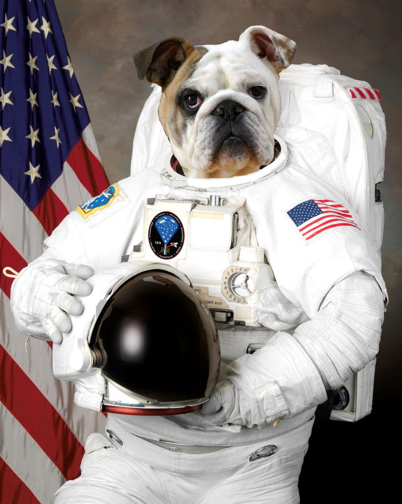
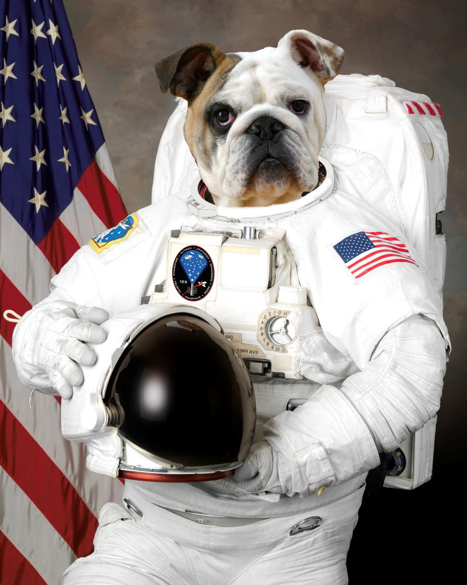

November 1957

In November of 1957 the Soviet Union was a stray dog that was found on the streets of Moscow and was launched on their spacecraft Sputnik 2. Laika unfortunatley died within hours from overheating.
In November of 1957 the Soviet Union was a stray dog that was found on the streets of Moscow and was launched on their spacecraft Sputnik 2. Laika unfortunatley died within hours from overheating.
On August 19, 1960 the Soviet Union launched Sputnik 5 which contained 40 mice, 2 rats, several fruit flies and two very special dogs. Belka and Strelka are the first animals to enter space and return to Earth safely.
 

20th July 1969, Neil Pawstrong and Pugs Aldrin took "one small step" on the moon and became the first dogs on the moon.

In January of 2030 we plan to launch the first team of dogs to Mars to start the first all dog planet.